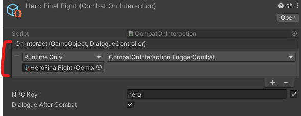

Sprint 1 Part 1 (1/28/24 to 2/11/24)
This semester's first sprint lasts 3 weeks instead of 2.
Introduction
I returned to WolverineSoft Studio after more than a year, this time as a programmer! My class schedule finally allowed me to rejoin
the student-run game studio, and I'm excited to apply what I've learned in the past year to this project.
This semester I'm working on Project Quest, an original RPG inspired by Undertale and Franken.
Since Project Quest is in its 2nd semester of development, the main challenge of this sprint was getting integrated into a large, existing
codebase throughout all my tasks.
Task 1: Throne Room Cutscene Revamp
Project Quest features various cutscenes in the overworld, and my first task was focused on improving aesthetics and squashing bugs
in the "throne room" cutscene; the protagonist, a druid, confronts the tyrannical king in the penultimate scene of the game:
There's definitely a lot to be desired from this cutscene, and I came to the conclusion that it could not reach a polished state through
code improvements alone, though that wasn't for lack of trying.
The main blocker was the lack of transition.
Since nothing separates the throne room from the preceding hallway, the player may not be in the center of the screen when they trigger
the cutscene. To compensate, the current implemetation teleports the player to the center of the tiled pathway and the camera makes
a jagged snap to follow. If there was a door, or the throne room existed in a separate Unity scene altogther, we could re-align
the player during some kind of scene transition, like a fade-to-black.
I explained this to the overworld team and my lead, and learned that both the throne room and the castle containing it were receiving
a layout and design revamp in the next sprint. As a result, this task is on hold for now.
Attempted Fixes and Implementations ►
Task 2: Final Battle Cutscene
The player faces the true antagonist of the game, an evil "hero", immediately after confronting the king. There was no cutscene
implemented yet, so dialogue would begin abruptly. I completed this task with a lot more success:
As the player exits the throne room, the hero simply walks up to the player from off-screen. The hero does not stop directly in front of
the player, but a simple fix would be adding the aforementioned transitions in and out of the throne room so that the player
aligns with the hero.
I used Unity's Timeline functionality for the first time and learned a great deal. I tinkered with pre-existing Signal Receivers and
got into Unity's animator as well. At the same time, I experienced a lot of friction learning functionality for the first time, and I
also spent a large chunk of time understanding the pre-existing cutscene implementation.
I honestly didn't expect this kind of task, since it involved far more animation and in-editor work
than programming, but I still expanded my understanding of Unity as a whole.
Task 3: Final Battle
Continued from the cutscene, the actual final battle itself would not trigger, even though the implementation existed. The fix turned out
to be extremely simple. The following command was originally empty from the dialogue-to-battle flow:

However, I ended up spending an embarrassing length of time on this issue. The above Runtime Only function appears about 6 clicks deep
in the inspector, somewhat hidden within a Dialogue Controller object; in Project Quest,
dialogue leads to battles leads to dialogue.
It felt like of those things that are really easy to find
once you know where it is, but if you don't...
I found the final battle prefab and the function to trigger it within the first hour of working on this task, but I simply had no
idea it ran the way it did. I attempting debugging, scouring components for reference, analyzing how previous battles trigger,
but over the course of multiple hours I never thought to look in the Hero's Dialogue Controller.
...For whatever reason, I also never thought to ask a fellow programmer with prior experience on the codebase. Once I finally
did so, we solved the issue within an hour. This should be a lesson I've already learned...but asking for help goes a long way
when working with new codebases.